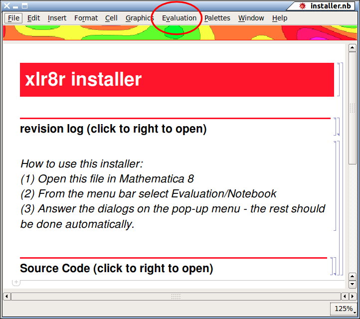
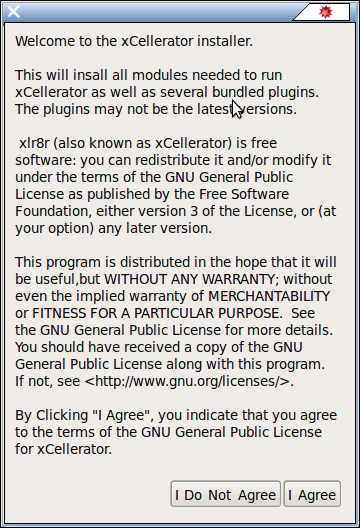
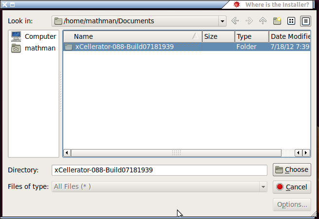
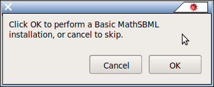
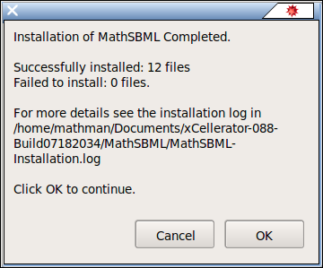
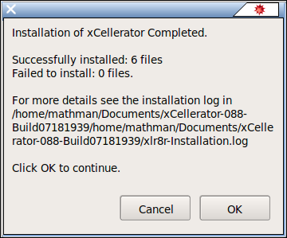

| Installing xCellerator | Reference Home |
-
You must have Mathematica version 8 installed on your computer for xCellerator to work. Mathematica is commercial software and you must purchase a copy. If you prefer not to use commercial software, you can use pyxlr8r which is implemented in Python, has the same functionality as xlr8r, and does not require Mathematica, and ignore the rest of these instructions.
-
Download the latest zip-file version of xlr8r from Sourceforge. The same download works for all versions of Linux, Mac OS, and Windows for which there is a Mathematica implementation (the file is platform independent).
-
Extract the zip file to a folder.
-
Look inside the folder you just created, and look for the Mathematica notebook file installer.nb.
-
Open installer.nb in Mathematica.
-
From the menu bar in Mathematica, select "Evaluation" then "Notebook" to evaluate the entire notebook.

-
Read the license agreement and click "I Agree."

-
The following dialog will appear:

-
When you click "Browse" a file selector will appear. For example, if your zip file was xCellerator-088-Build07181939.zip and you extracted it into a subfolder of your Documents folder, then you would click on xCellerator-088-Build07181939 (without the .zip).

-
You are asked if you want to install MathSBML. You should click yes, as this will always install the latest version, even if you already have it. MathSBML is required even if you do not use SBML, because some other library functions in MathSBML are used by xCellerator.

-
The installer knows tells you when it is done installing MathSBML. Click OK. You can look at the log it refers to if you are interested in the names of the files it installed.
 -
The rest of xCellerator is then installed and the following message tells you when you are finished. Click OK.
 -
Quit from Mathematica - Close all open notebooks and select Quit from the File option on the menu bar. Installation is now complete.